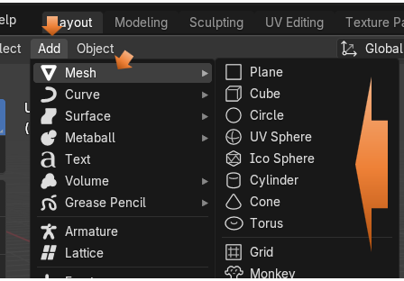
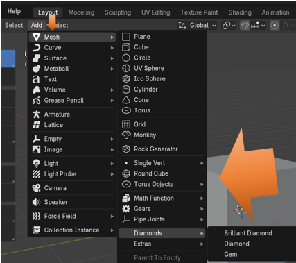

~Adding Extra Mesh Objects~
1/25/2025
How to Add Extra Mesh Objects
You can add Extra Mesh Objects to Blender by:
Open Blender and go to Edit -Preferences
Click on Add-ons from the left panel and then click the check box for Extra Mesh Objects.
Without Extra Mesh Objects turned on all you are getting is this list of objects

To Find your New Extra Mesh Objects
After adding your Extra Mesh Objects from the Add On section of Preferences, go to the Add Menu, and click on Mesh to access its sub menu. Here you see a whole list of other objects that can be added. Some of the new items that you will find here are pipes, diamonds, single vertices, rocks, and if you click on Extras to open its sub menu, you will even find a cute little T-pot.

Anything with arrows after it will give you access to even more stuff. Here is what you get when you click on the arrow after Extras.